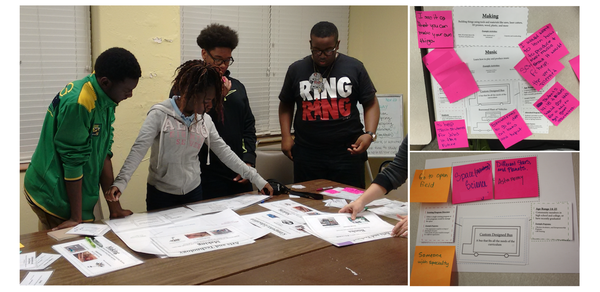
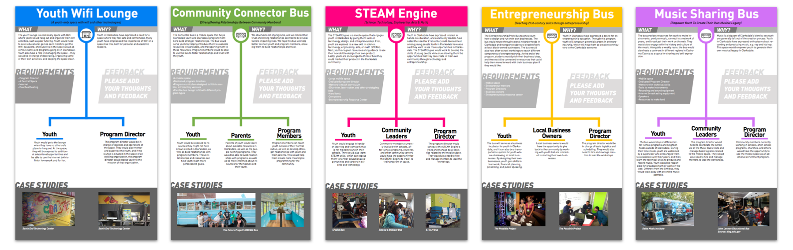
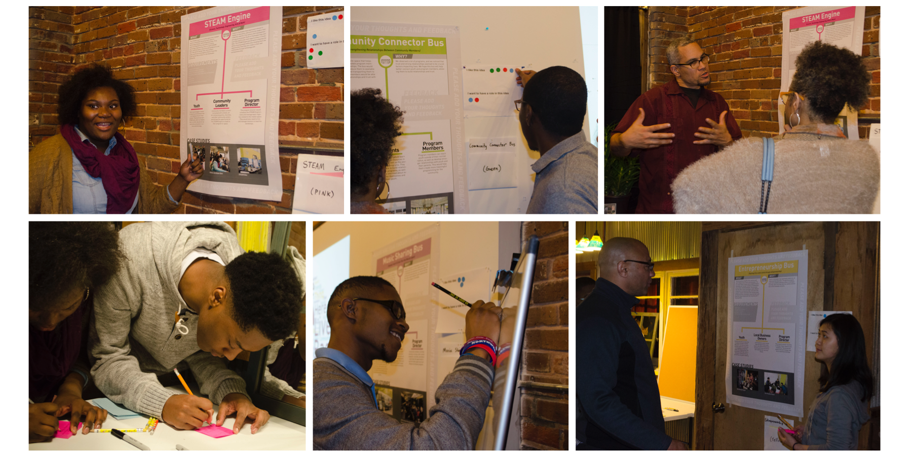
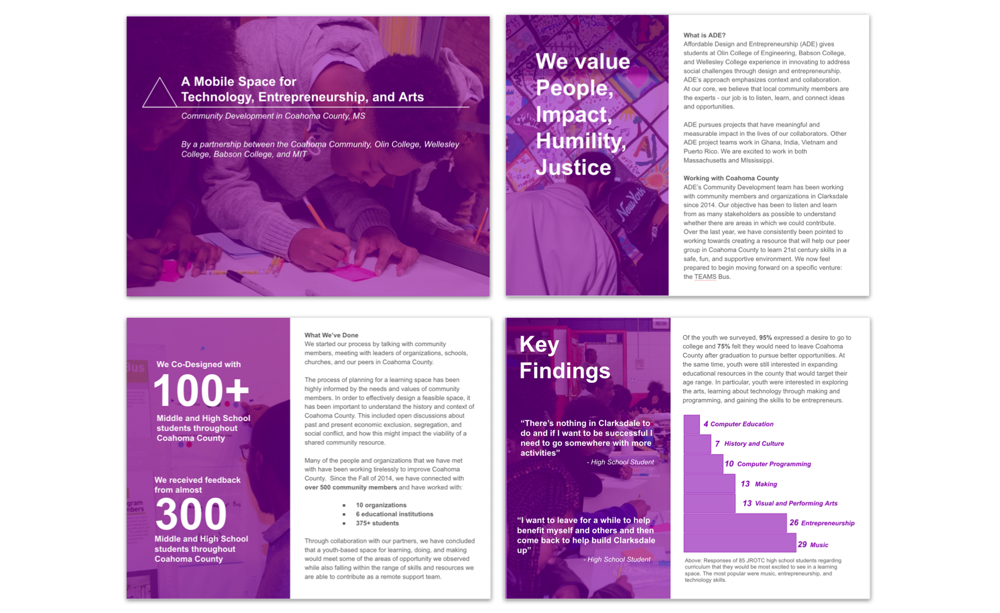

Coahoma County, Mississippi asks:
What are the tools Coahoma County youth need to
prepare themselves for the future?
For a year, I was a UX + graphic designer, project manager, and curriculum developer in a team working with Coahoma community members and organizations; these groups are addressing challenges in providing the youth of Coahoma with the necessary resources to be successful. Below are some of the design works I did to help the team understand and get feedback from the community.
Co-Designing with Youth
We co-designed with youth in Coahoma County to learn more about available and missing learning resources in their community. I helped design an activty (shown below) that allowed the students to imagine a new learning space, which helped us begin conversations about their needs and values.
Left: Youth from an afterschool program ideating a mobile bus that teaches arts, technology and making. Right: Samples of ideated spaces made by high schoolers.
With this activity, we were able to get ideas and have conversations with over 100 Coahoma youth. This information helped us narrow down to 5 potential ideas for a learning space in Coahoma County.
KEY TAKEAWAYS: Coahoma youth are very much interested in music, entrepreneurship and the arts. Many of the youth feel uncomfortable in the city, and want a safe, youth-centered space where they can study, learn and hang out.
Community Meeting with Youth and Leaders
(I designed the posters!)
After co-designs, we held meetings with community leaders, organizations, and youth. I designed posters for 5 potential learning spaces that were formed using the data from the co-design activity. The posters were set up around our meeting space and sent to schools in the area for more feedback from students. We ended up receiving feedback from over 400 students.
Five posters I designed for the community feedback session. Posters include information about impact, requirements, and case studies of existing spaces.
Photos from our meeting. Community members were able to give feedback on each idea, as well as show interest in becoming involved with executing the space.
KEY TAKEAWAYS: A mobile space can serve people across socio-economic lines in the county. Existing organizations see the mobile space as an opportunity to reach people without transportation, people in smaller towns, or people who might not know about their programs.
Testing Assumptions and Running Activities
Using the information from co-designs and community meetings, we designed activities to test with youth. We setup these activities at the Juke Joint Festival, a blues festival which brings thousands of Coahoma residents to the city. We also tested and iterated the activities at CCYO, a new youth center.

Youth testing art, technology and music related activities. Left: a community mural. Middle and Right: music+technology activity using the Makey Makey.
KEY TAKEAWAYS: The activities were popular with younger groups and their parents. However, the team will have to rethink curriculum that will be better suited for the older youth (12+).
Proposal to Local Government
(I designed the proposal!)
At the end of the year, I helped design a proposal for a mobile learning space. The proposal has been shared with potential organization partners, as well as local government officials.
Sample pages from the proposal. The proposal includes data from co-designs, financial plans, and potential curricula for the mobile learning space.
If you are interested in reading the whole proposal, or learning more about this project, you can reach me at leedoyung(at)gmail.com! The project is currently in its third year, and the team is focusing on curriculum design, funding, and measuring progress.